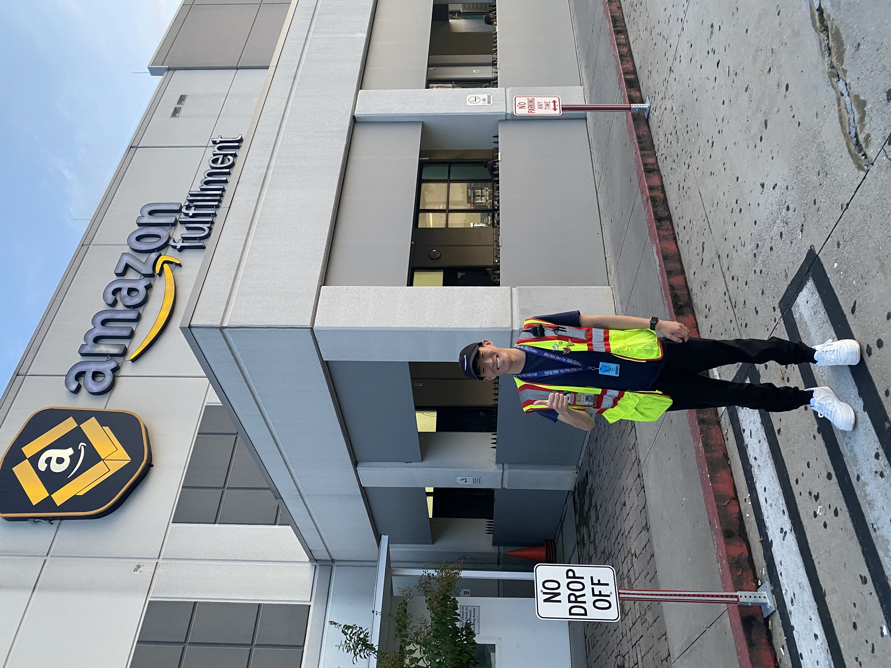

About Me
Background
Howdy y’all! My name is Seth Harris, and I just recently graduated in May 2023 with a Bachelor of Business Administration in Management, Consulting from Texas A&M University in College Station, Texas. I currently am working full-time as a FSO Tax CTORS Associate Analyst at EY and recently moved to San Antonio, TX, which has been an exciting and interesting endeavor. In addition, I am actively pursuing a Master of Science in Data Analytics degree at the University of Texas at San Antonio as a part-time student with plans of graduating in May 2025. I was born in Daegu, South Korea, but raised all my life in Odessa, Texas.
Training and Experience
I have a solid foundation in statistics, programming, and data analysis. During my academic journey, I have:
- Gained proficiency in R, Python, and SAS for data analysis and statistical modeling.
- Worked on multiple projects involving data cleaning, exploratory data analysis, and predictive modeling.
- Developed a strong understanding of various statistical techniques and their applications.
My most recent experience in data analysis would be my Amazon internship in Chattanooga, Tennessee in June 2022 - August 2022 as an area manager intern. During this time, I have:
Analyzed operational data to identify areas for process improvement in the inbound flow process.
Developed and implemented a rotational indirect staffing project to optimize workforce allocation.
Utilized data to drive standard work and continuous improvement, enhancing efficiency and meeting gender diversity standards by 20%.
Conducted data-driven performance reviews and set targets to achieve operational goals.
Ensured data accuracy and compliance with safety and quality standards.
Collaborated with management to interpret data and inform strategic decision-making.

Research Interests
My research interests include:
- Predictive modeling and machine learning.
- Time series analysis and forecasting.
- Optimization and decision-making in business contexts.
- Data visualization and storytelling.
Goals for This Course
In this course, I hope to:
- Deepen my understanding of advanced data analysis techniques.
- Gain hands-on experience with real-world data sets and complex analytical problems.
- Enhance my skills in using GitHub and other analytical tools.
- Collaborate with peers to share knowledge and insights in project management and workflows.
Some Interesting Facts About Me
One interesting fact about me is that I am an avid collector and reseller of high-end sneakers, streetwear clothing, Funko pops, and sports cards. In addition, I really enjoy attending music festivals with friends. Most recently, I attended EDC Las Vegas at the Las Vegas Motor Speedway, which currently stands as the largest electronic dance music festival in North America as of 2024. Lastly, I play video games occasionally on my PS5 with friends, such as Rocket League, XDefiant, and Madden 24.
Cool Data Analysis Resources
I recently came across this fascinating video on Youtube: What does data and analytics have to do with shoes? that explains how data analytics is used in a major sporting brand, such as Nike. It’s an excellent example of how data analysis can help inspire new ideas and trends for all professional athletes around the world! In addition, I found this Harvard Article: Nike: It’s Data Analytics, Just Do It that highlights the digital innovation and transformation used in the Nike brand.
.png)